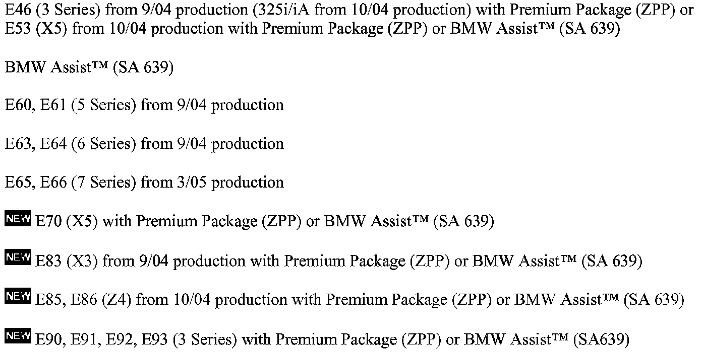
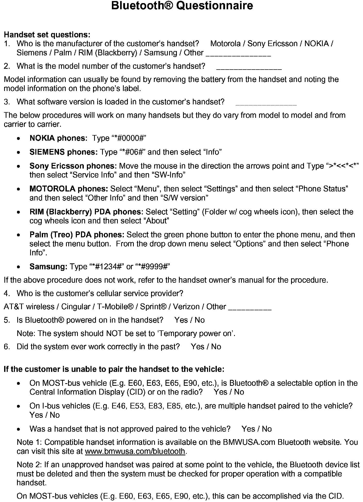
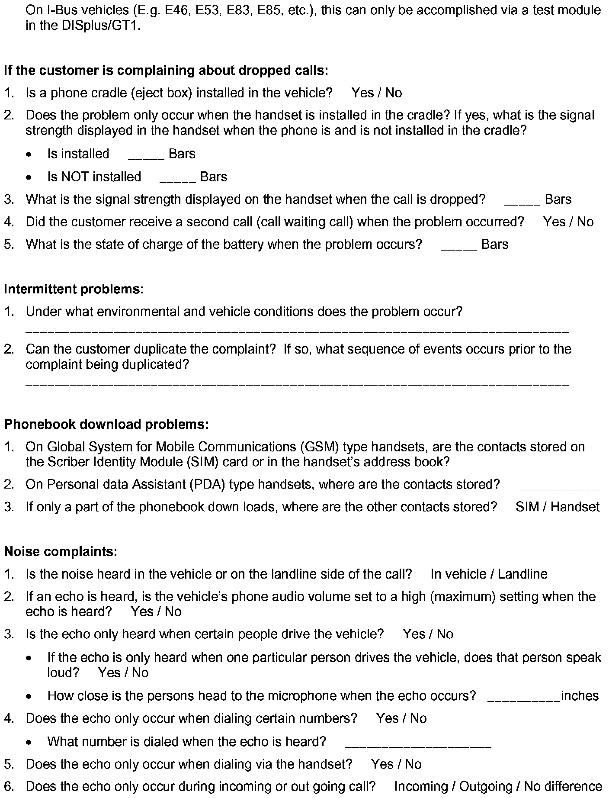
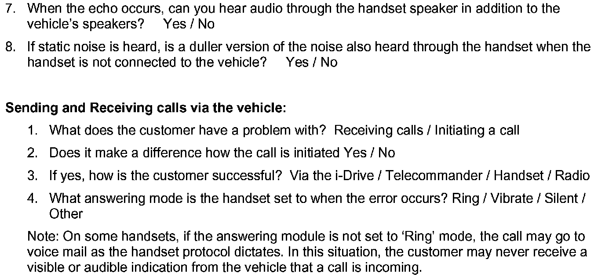

Cell Phone - Bluetooth(R) Handset Diagnostics
SI B 84 05 06Phone, Navigation Systems
March 2007
Technical Service
This Service Information bulletin supersedes S.I. B84 05 06 dated March 2006.
[NEW] designates changes to this revision
SUBJECT
Diagnosis of Bluetooth(R) Handset Related Complaints

MODEL
SITUATION
Bluetooth handset related complaints are difficult to diagnose without specific information relating to the handset and the customer's concern.



To assist technicians in diagnosis of these complaints, the form shown should be completed by the client advisor and in conjunction with the customer.
Whenever possible, the customer should leave their handset so the problem can be properly diagnosed.
[NEW] PROCEDURE
Before the complaint can be addressed, the particular handset must be verified for compatibility with the respective Bluetooth system installed in vehicle (E.g. BMW Assist w/Bluetooth technology, BTUM, ULF). On vehicles equipped with BMW Assist with Bluetooth wireless technology, to confirm whether or not the phone is compatible, visit www.bmwusa.com/bluetooth for a list of handsets that have passed BMW testing for compatibility. Note the following disclaimer on this web site:
"This list is provided for reference only. The mobile phones listed here have passed compatibility tests as of the date of testing and meet or exceed minimum standards established by BMW. The list is not a warranty for phone performance or functionality. BMW makes no guarantees or warranties as to the performance of each phone while connected to your BMW via Bluetooth Wireless Technology. Furthermore, software releases by BMW, the phone supplier or the wireless carrier dated after testing might alter compatibly results. While many phones are offered with Bluetooth Wireless Technology, not all phones support the necessary profiles to work with your BMW. BMW does not guarantee availability or functionality with all wireless carriers. Functions such as synchronizing the address book and transferring a call into or out of the vehicle may function differently from phone to phone".
COMPATIBLE HANDSETS
For a customer's handset to be compatible, it needs to meet the following requirements:
^ An approved cellular service provider (E.g. Verizon, Sprint, AT&T wireless, etc).
^ The handset manufacturer and model number must match the information listed on the website.
^ An approved software version (if there is a handset software version restriction, the tested/ approved software version is listed in the "Known Issues" portion of the web site).
If the customer's handset is compatible, please complete the Bluetooth Questionnaire shown above before any repair attempts. The information from this questionnaire is important in helping diagnosis of any Bluetooth related complaint. In the event a PuMA case needs to be submitted to help you diagnose the vehicle, the Technical Hotline representative may asked you to fax in this questionnaire.
Note:
Whenever possible, the customer should leave their handset so the problem can be properly diagnosed.
[NEW] NON-COMPATIBLE HANDSETS
If the customer's handset is not compatible, please inform the customer that any attempted repair or diagnosis may not fix the complaint. An incompatible Bluetooth phone should never be used with the BMW hands-free system. Please suggest the customer obtains one of the compatible Bluetooth(R) phones listed on www.bmwusa.com/Bluetooth.
However, in order to enhance customer satisfaction and to verify there is not a problem with the vehicle, perform the following:
^ Delete all devices from the paired device list in the vehicle.
^ Delete all devices from the handset paired device list.
^ Pair a known good handset to the vehicle and check the vehicle for proper Bluetooth functionality.
Note:
^ The handset address book must complete the transfer process before any functionality can be validated.
^ A second handset should never be paired to the vehicle prior to the completion of the phonebook down of the first handset paired to the vehicle.
^ Whenever possible, the customer should leave their handset so the problem can be properly diagnosed.

Disclaimer